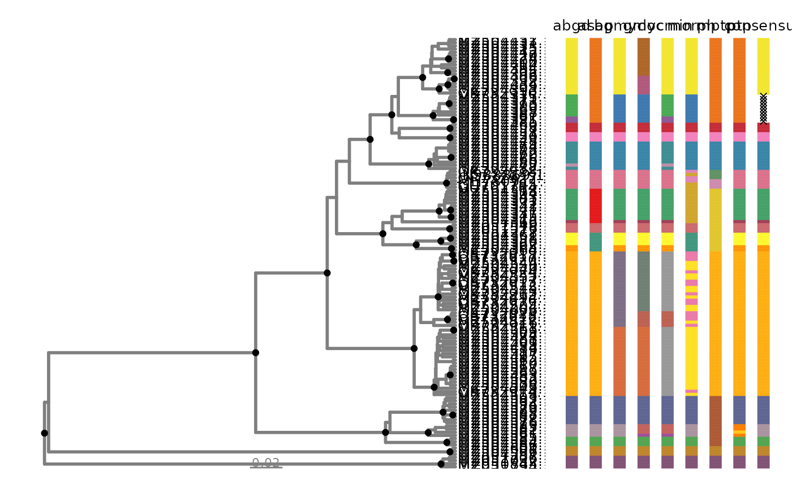

Extract Labels and Colors from Species Delimitation Partitions
Source:R/get_delim_cols.R
get_delim_cols.Rdget_delim_cols() returns a tbl_df format containing
extracted and processed data from delim_autoplot.
Arguments
- p
Output from delim_autoplot.
- delimname
A character vector of species delimitation names (optional). If provided, the function filters the data to only include rows matching such terms. Default to NULL.
- hap_tbl
output from haplotype_tbl (optional). If provided, the function will annotate color and fill data for collapsed haplotypes. Default to NULL.
Value
an object of class tbl_df.
Details
get_delim_cols() is a convenience function to extract labels, species partitions,
color and fill data from the output of delim_autoplot in a tbl_df
format. It is best used when combined with haplotype information from
haplotype_tbl or when combined with other metadata, such as GPS coordinates
for map plotting.
Examples
# plot using autoplot
p <- delim_autoplot(geophagus_delims, geophagus_beast)
#> Warning: ⚠ Argument `tbl_labs` not provided. Using tiplabels instead.
#> Warning: ⚠ Argument `delim_order` not provided. Using default order from
#> `geophagus_delims`.
#> Warning: ⚠ Argument `col_vec` not provided. Customizing one using `delim_brewer()`.
#> ℹ Please use `delimtools::delim_brewer()` to create even better colour
#> palettes!
#> Warning: ⚠ `n_match` was not found. Using `n_match= 4` instead.
# view
p

# get haplotypes
hap_tbl <- haplotype_tbl(geophagus)
#> Warning: ⚠ You have missing data "('N','-' '?')" or ambiguity inside your sequence, i.e.
#> not padding the ends, and this may have unintended consequences later, as they
#> have now been removed!
#> ℹ The names of the samples are bellow.
#> GU701784.1, GU701785.1
# extract colors for consensus
get_delim_cols(p, delimname= "consensus", hap_tbl= hap_tbl)
#> # A tibble: 354 × 6
#> labels method spp fill colour status
#> <chr> <fct> <fct> <chr> <chr> <chr>
#> 1 MZ504432.1 consensus sp3 #B0597C #B0597C haplotype
#> 2 MZ504431.1 consensus sp3 #B0597C #B0597C haplotype
#> 3 MZ504433.1 consensus sp3 #B0597C #B0597C haplotype
#> 4 MZ504415.1 consensus sp3 #B0597C #B0597C haplotype
#> 5 MZ504442.1 consensus sp3 #B0597C #B0597C haplotype
#> 6 MZ504420.1 consensus sp3 #B0597C #B0597C haplotype
#> 7 MZ504424.1 consensus sp3 #B0597C #B0597C haplotype
#> 8 MZ504400.1 consensus sp3 #B0597C #B0597C haplotype
#> 9 MZ504414.1 consensus sp3 #B0597C #B0597C haplotype
#> 10 MZ504394.1 consensus sp3 #B0597C #B0597C haplotype
#> # ℹ 344 more rows